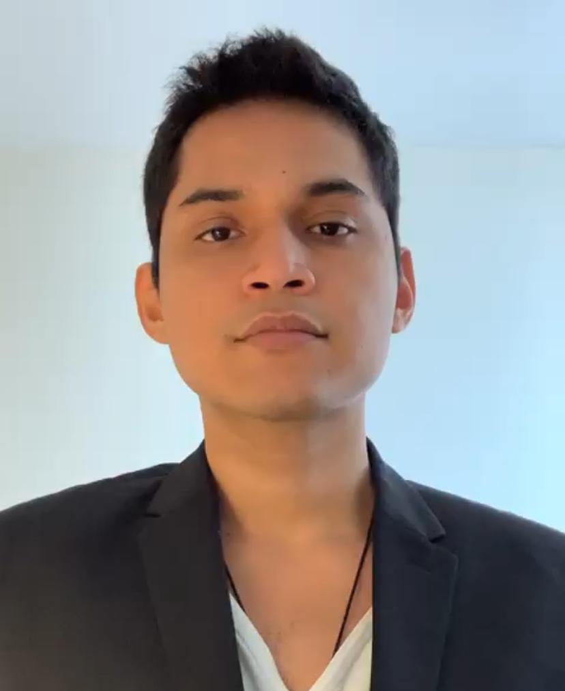
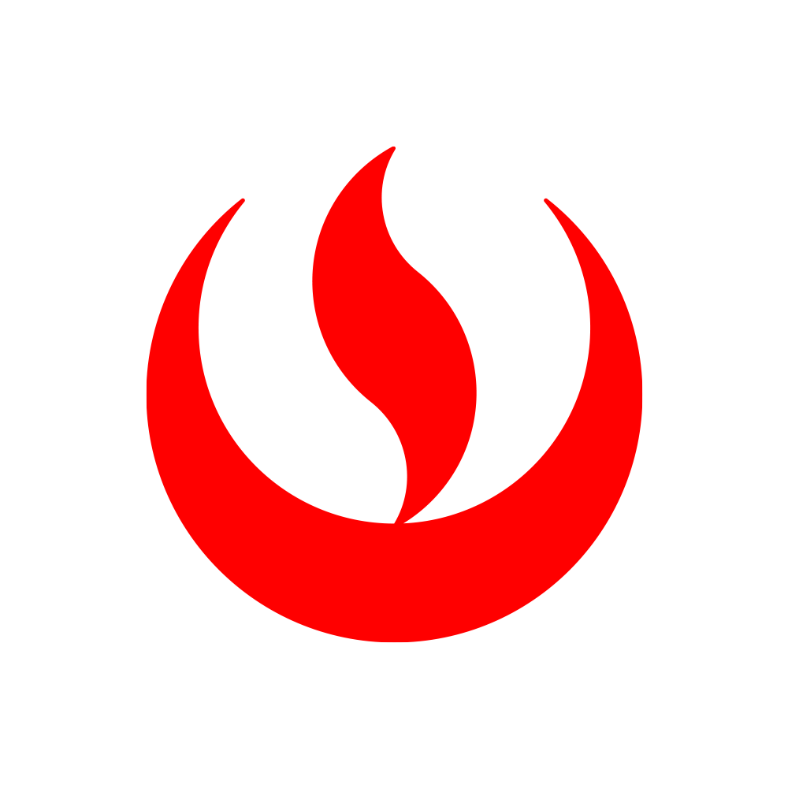

Alvaro Ramos

 Linkedin Profile
Linkedin Profile
Summary:
I'm a multi-disciplinary professional creative, in constant search of learning and challenges.
I consider myself optimistic, resilient and open-minded.
Education:

- Bachelor's degree in Direction and Graphic Design - Toulouse Lautrec (2017-2022)
Work Experience:
-
Graphic Design Practicioner - Dench Partners
July 2020 - September 2020
- Responsible for creating individual graphic pieces requested by the Marketing team.
-
Creative Consultant - Prendy
January 2022 - Present
- Creation of graphic pieces for Branding and Marketing projects.
- Video editing for Social Media
- UX Design for Websites
-
Independent Graphic Designer - Protege Perú
July 2023 - Present
- Maintenance and continuity of the company's corporate image.
Certifications:

- Certification in User Experience Management - Universidad Peruana de Ciencias Aplicadas (2023)

-
Enterprise Design Thinking Practicioner - IBM (2021)
Credential
Skills:
- Adobe Illustrator
- Adobe Photoshop
- Figma
Other:
© Alvaro Ramos. All rights reserved.